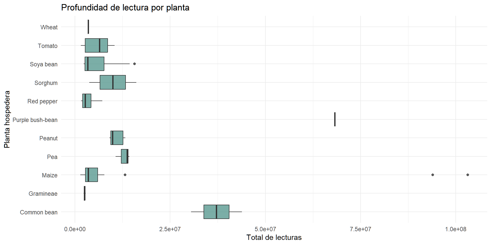
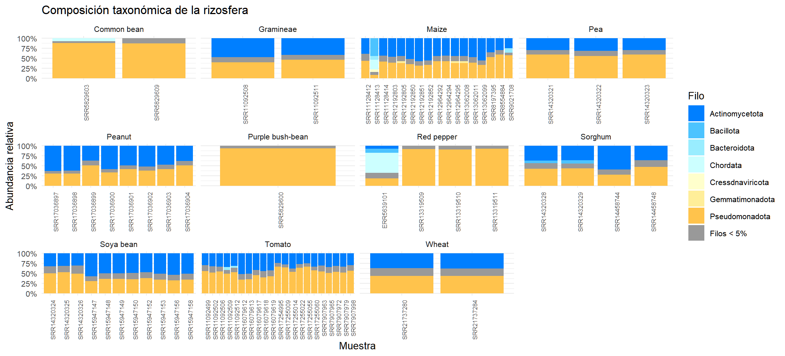

Código
```{r}
#| eval: false
#| label: fig-ejemplo
#| fig-cap: "Ejemplo de una figura generada desde R"
plot(1:5, (1:5)^2, pch = 19)
```Imagina que obtienes una figura sobre la composición microbiana de la rizosfera y la envías a una compañera. La figura permite ver el resultado, pero no responde por sí sola preguntas como: ¿qué muestras se utilizaron?, ¿qué filtros se aplicaron?, ¿qué código generó la figura? o ¿qué versiones de los paquetes se emplearon?
En un proyecto bioinformático conviene distinguir tres productos:
| Producto | ¿Qué permite hacer? | ¿Qué no garantiza? |
|---|---|---|
Script .R |
Consultar y ejecutar instrucciones | Que los resultados y su interpretación estén explicados |
Reporte .html |
Leer resultados, figuras, tablas y explicaciones sin ejecutar R | Que el lector pueda reproducirlos si faltan código o datos |
| Proyecto reproducible | Recuperar código, datos, dependencias e instrucciones para regenerar resultados | Que los resultados sean científicamente correctos por sí mismos |
Idea central: un reporte comunica el análisis; un proyecto reproducible permite volver a generarlo. Necesitamos ambas cosas.
.qmd en RStudiodata_raw/ y results/.reporte_rizosfera.qmd en la raíz del proyecto (al mismo nivel que results/).Un documento Quarto combina texto escrito en Markdown, código ejecutable y opciones de presentación. El archivo de origen termina en .qmd y puede generar HTML, PDF u otros formatos.
Al principio del archivo aparece un bloque entre líneas ---:
---
title: "Composición microbiana de la rizosfera"
author: "Nombre del estudiante"
date: today
lang: es
format:
html:
toc: true
code-fold: true
execute:
warning: false
message: false
---title, author y date: información que aparecerá en el reporte.format: html: indica que queremos generar una página HTML.toc: true: agrega una tabla de contenidos.code-fold: true: permite ocultar y desplegar el código en la versión HTML.warning: false y message: false: evitan mostrar avisos y mensajes rutinarios en el documento, pero no corrigen errores del código.Atención: YAML utiliza espacios para indicar jerarquías. No uses tabuladores y respeta la indentación.
En un archivo .qmd podemos escribir:
# Introducción
Este reporte analiza la **composición taxonómica** de muestras de rizosfera.
## Pregunta de investigación
¿Observamos diferencias entre las *plantas hospederas*?
- Primer objetivo.
- Segundo objetivo.
[Documentación de Quarto](https://quarto.org/docs/)| Sintaxis | Resultado |
|---|---|
# Título |
Encabezado principal |
## Subtítulo |
Encabezado de segundo nivel |
**texto** |
Negritas |
*texto* |
Cursivas |
`filter()` |
Código en línea |
[texto](https://ejemplo.org) |
Enlace |
Los bloques de R comienzan con tres acentos graves y {r}, y terminan con tres acentos graves. Por ejemplo, copia el siguiente bloque en tu reporte nuevo:
```{r}
#| eval: false
#| label: fig-ejemplo
#| fig-cap: "Ejemplo de una figura generada desde R"
plot(1:5, (1:5)^2, pch = 19)
```Las líneas #| son opciones del bloque. Algunas útiles son:
| Opción | Efecto |
|---|---|
#| echo: false |
Ejecuta el código, pero no lo muestra en el HTML |
#| eval: false |
Muestra el código sin ejecutarlo |
#| include: false |
Ejecuta el código, pero no muestra ni código ni resultados |
#| fig-cap: "..." |
Añade una leyenda a una figura |
#| fig-width: 9 |
Define el ancho de la figura, en pulgadas |
#| fig-height: 5 |
Define la altura de la figura, en pulgadas |
Diferencia importante: echo: false no significa que el código deje de ejecutarse. eval: false sí evita su ejecución.
En esta sección construiremos el contenido de un segundo archivo, reporte_rizosfera.qmd. Los bloques que siguen son fragmentos para copiar en ese archivo; los ejemplos del tutorial no sustituyen tu reporte.
Nuestro reporte tendrá las siguientes secciones:
No basta con insertar figuras: cada resultado debe acompañarse de una explicación breve de lo que se observa y de lo que no podemos concluir.
Añade este bloque al principio de tu reporte, después de la introducción, cambia #| include: true por #| include: false:
```{r}
#| label: setup
#| include: true
#| message: false
#| warning: false
library(readr)
library(dplyr)
library(ggplot2)
library(tidyr)
library(paletteer)
library(kableExtra)
metadata_riz <- read_csv("data_raw/datos_rizosfera/metadata_rizosfera.csv")
totales_muestra <- read_tsv("results/totales_muestra.tsv")
generos_5 <- read_tsv("results/generos_5.tsv")
filos_5 <- read_tsv("results/filos_5.tsv")
```Al comenzar un reporte reproducible, es conveniente incluir un bloque de configuración donde carguemos los paquetes y archivos que utilizaremos.
En un reporte final, normalmente no necesitamos mostrar este código al lector, aunque sí necesitamos que se ejecute. Para ello podemos utilizar:
#| include: false: ejecuta el bloque, pero oculta tanto el código como sus resultados.#| echo: false: ejecuta el bloque y muestra sus resultados, pero oculta el código.Importante: las rutas son relativas a la raíz del proyecto. Si en tu computadora cambiaste el nombre o la ubicación de los archivos, ajusta las rutas antes de renderizar. El bloque debe poder ejecutarse sin objetos creados previamente en la consola.
Primero mostraremos cuántas muestras tenemos por planta hospedera. Escribe un párrafo que explique qué representa la tabla y agrega:
```{r}
#| label: tbl-muestras-r
resumen_hospederos <- metadata_riz %>%
count(host_name, name = "numero_muestras") %>%
arrange(desc(numero_muestras))
knitr::kable(
resumen_hospederos,
col.names = c("Planta hospedera", "Número de muestras"),
caption = "Número de muestras por planta hospedera"
)
```| Planta hospedera | Número de muestras |
|---|---|
| Tomato | 21 |
| Maize | 17 |
| Soya bean | 11 |
| Peanut | 8 |
| Red pepper | 4 |
| Sorghum | 4 |
| Pea | 3 |
| Common bean | 2 |
| Gramineae | 2 |
| Wheat | 2 |
| Purple bush-bean | 1 |
Para interpretar: ¿todas las plantas tienen la misma cantidad de muestras? ¿Cómo podría influir esto al comparar sus resultados?
knitr::kable()En un reporte científico, las tablas permiten presentar resultados de manera organizada. Sin embargo, mostrar directamente un data.frame no siempre produce una presentación adecuada para compartir con otras personas.
La función knitr::kable() convierte una tabla de R en una tabla con formato para nuestro documento. Podemos utilizarla tanto en reportes HTML como en PDF.
Por ejemplo, anteriormente calculamos el número de muestras por planta hospedera:
```{r}
resumen_hospederos <- metadata_riz %>%
count(host_name, name = "numero_muestras") %>%
arrange(desc(numero_muestras))
knitr::kable(resumen_hospederos)
```| host_name | numero_muestras |
|---|---|
| Tomato | 21 |
| Maize | 17 |
| Soya bean | 11 |
| Peanut | 8 |
| Red pepper | 4 |
| Sorghum | 4 |
| Pea | 3 |
| Common bean | 2 |
| Gramineae | 2 |
| Wheat | 2 |
| Purple bush-bean | 1 |
Aunque la tabla ya es legible, podemos mejorar su presentación mediante diferentes argumentos.
Los argumentos caption y col.names permiten agregar un título descriptivo y utilizar encabezados más claros.
```{r}
#| label: tbl-hospederos
#| tbl-cap: "Número de muestras por planta hospedera"
knitr::kable(
resumen_hospederos,
col.names = c("Planta hospedera", "Número de muestras")
)
```| Planta hospedera | Número de muestras |
|---|---|
| Tomato | 21 |
| Maize | 17 |
| Soya bean | 11 |
| Peanut | 8 |
| Red pepper | 4 |
| Sorghum | 4 |
| Pea | 3 |
| Common bean | 2 |
| Gramineae | 2 |
| Wheat | 2 |
| Purple bush-bean | 1 |
En este ejemplo:
col.names modifica los nombres que aparecen en la tabla, sin cambiar los nombres originales del objeto en R.tbl-cap agrega un título a la tabla mediante Quarto.label: tbl-hospederos permite identificarla y referenciarla desde el texto.Por ejemplo, podemos escribir:
En la Tabla 11.2 se presenta el número de muestras disponibles para cada planta hospedera.
Quarto genera automáticamente la referencia a la tabla.
En ocasiones, una tabla contiene demasiadas observaciones para incluirlas completas en un reporte.
Podemos mostrar únicamente las primeras filas:
```{r}
knitr::kable(
head(resumen_hospederos, 10),
col.names = c("Planta hospedera", "Número de muestras"),
caption = "Primeras diez plantas según el número de muestras"
)
```| Planta hospedera | Número de muestras |
|---|---|
| Tomato | 21 |
| Maize | 17 |
| Soya bean | 11 |
| Peanut | 8 |
| Red pepper | 4 |
| Sorghum | 4 |
| Pea | 3 |
| Common bean | 2 |
| Gramineae | 2 |
| Wheat | 2 |
La función head() no modifica la tabla original; solamente selecciona las primeras observaciones para mostrarlas.
El argumento align controla la alineación:
"l": izquierda (left)."c": centro (center)."r": derecha (right).Podemos establecer una alineación diferente para cada columna:
```{r}
knitr::kable(
head(resumen_hospederos, 10),
col.names = c("Planta hospedera", "Número de muestras"),
align = c("l", "c"),
caption = "Número de muestras por planta hospedera"
)
```| Planta hospedera | Número de muestras |
|---|---|
| Tomato | 21 |
| Maize | 17 |
| Soya bean | 11 |
| Peanut | 8 |
| Red pepper | 4 |
| Sorghum | 4 |
| Pea | 3 |
| Common bean | 2 |
| Gramineae | 2 |
| Wheat | 2 |
En este caso, los nombres de las plantas se alinean a la izquierda y los conteos al centro.
Cuando trabajamos con abundancias relativas, podemos obtener números con muchos decimales. Para mejorar la lectura, kable() permite controlar cuántos se muestran mediante digits.
Por ejemplo, calculemos la proporción de muestras correspondiente a cada planta:
```{r}
tabla_proporciones <- resumen_hospederos %>%
mutate(
proporcion = numero_muestras / sum(numero_muestras),
porcentaje = proporcion * 100
) %>%
select(host_name, numero_muestras, porcentaje)
knitr::kable(
tabla_proporciones,
col.names = c("Planta hospedera", "Muestras", "Porcentaje (%)"),
digits = 2,
align = c("l", "c", "r"),
caption = "Distribución porcentual de las muestras por planta"
)
```| Planta hospedera | Muestras | Porcentaje (%) |
|---|---|---|
| Tomato | 21 | 28.00 |
| Maize | 17 | 22.67 |
| Soya bean | 11 | 14.67 |
| Peanut | 8 | 10.67 |
| Red pepper | 4 | 5.33 |
| Sorghum | 4 | 5.33 |
| Pea | 3 | 4.00 |
| Common bean | 2 | 2.67 |
| Gramineae | 2 | 2.67 |
| Wheat | 2 | 2.67 |
| Purple bush-bean | 1 | 1.33 |
El argumento digits = 2 muestra los valores numéricos con un máximo de dos cifras decimales, según su formato.
Importante: cambiar el número de decimales que se muestran no modifica los valores almacenados en nuestro objeto de R.
La función kable() incluye otras opciones que pueden resultar útiles:
| Argumento | Función |
|---|---|
caption |
Agrega un título a la tabla. |
col.names |
Cambia los encabezados visibles. |
align |
Controla la alineación de las columnas. |
digits |
Controla la cantidad de decimales. |
format.args |
Permite utilizar opciones de formato numérico, como separadores de miles. |
na |
Define cómo se muestran los valores faltantes (NA). |
row.names |
Permite mostrar u ocultar los nombres de las filas. |
booktabs |
Mejora el estilo de las líneas horizontales en tablas LaTeX, especialmente para PDF. |
Por ejemplo, podemos indicar explícitamente que no queremos mostrar los nombres de las filas y utilizar un texto para los valores faltantes:
```{r}
knitr::kable(
head(resumen_hospederos, 10),
col.names = c("Planta hospedera", "Número de muestras"),
row.names = FALSE,
na = "Sin dato",
align = c("l", "r")
)
```| Planta hospedera | Número de muestras |
|---|---|
| Tomato | 21 |
| Maize | 17 |
| Soya bean | 11 |
| Peanut | 8 |
| Red pepper | 4 |
| Sorghum | 4 |
| Pea | 3 |
| Common bean | 2 |
| Gramineae | 2 |
| Wheat | 2 |
kableExtra podemos incluir notas al pie integradas```{r}
#| label: tbl-hospederos-notas
#| tbl-cap: "Distribución de muestras por planta hospedera"
resumen_hospederos %>%
knitr::kable(
col.names = c("Planta hospedera", "Número de muestras"),
align = c("l", "c")
) %>%
kableExtra::kable_styling(
full_width = FALSE,
position = "center"
) %>%
kableExtra::footnote(
general = "Los conteos corresponden a las muestras disponibles en los metadatos.",
alphabet = c(
"La cantidad de muestras no necesariamente es igual entre plantas.",
"Las muestras pueden proceder de diferentes estudios."
),
general_title = "Nota: "
)
```| Planta hospedera | Número de muestras |
|---|---|
| Tomato | 21 |
| Maize | 17 |
| Soya bean | 11 |
| Peanut | 8 |
| Red pepper | 4 |
| Sorghum | 4 |
| Pea | 3 |
| Common bean | 2 |
| Gramineae | 2 |
| Wheat | 2 |
| Purple bush-bean | 1 |
| Nota: | |
| Los conteos corresponden a las muestras disponibles en los metadatos. | |
| a La cantidad de muestras no necesariamente es igual entre plantas. | |
| b Las muestras pueden proceder de diferentes estudios. |
Recuperamos el total de lecturas por muestra y los metadatos de la planta hospedera:
```{r}
#| label: fig-profundidad
#| fig-cap: "Total de lecturas por muestra, según planta hospedera"
#| fig-width: 10
#| fig-height: 5
profundidad <- totales_muestra %>%
left_join(
metadata_riz %>% select(sample_id, host_name),
by = "sample_id"
)
ggplot(profundidad, aes(x = host_name, y = total_lecturas)) +
geom_boxplot(fill = "#5A9A91", alpha = 0.8) +
coord_flip() +
labs(
x = "Planta hospedera",
y = "Total de lecturas",
title = "Profundidad de lectura por planta"
) +
theme_minimal()
```
Debajo de la figura, escribe dos o tres oraciones: describe una observación, explica por qué puede importar y evita afirmar causalidad.
Usaremos la tabla filos_5, que ya contiene abundancias relativas. No hay que recalcularlas.
```{r}
#| label: fig-filos
#| fig-cap: "Composición taxonómica por filo en muestras de rizosfera"
#| fig-width: 11
#| fig-height: 5
orden_filos <- c(
sort(setdiff(unique(filos_5$taxon_final), "Filos < 5%")),
"Filos < 5%"
)
colores <- as.character(
paletteer::paletteer_d("colorBlindness::Blue2Orange8Steps")
)
colores <- c(colores[1:7], "#999999")
filos_grafica <- filos_5 %>%
left_join(
metadata_riz %>% select(sample_id, host_name),
by = "sample_id",
suffix = c("", "_metadata")
)
# Si la tabla ya incluía host_name, conservar esa columna.
if ("host_name_metadata" %in% names(filos_grafica)) {
filos_grafica <- filos_grafica %>%
mutate(host_name = coalesce(host_name, host_name_metadata)) %>%
select(-host_name_metadata)
}
ggplot(
filos_grafica,
aes(x = sample_id, y = abundancia_relativa, fill = taxon_final)
) +
geom_col() +
scale_fill_manual(values = colores,
breaks = orden_filos) +
facet_wrap(~ host_name, scales = "free_x") +
scale_y_continuous(labels = scales::label_percent()) +
labs(
x = "Muestra", y = "Abundancia relativa", fill = "Filo",
title = "Composición taxonómica de la rizosfera"
) +
theme_minimal(base_size = 10) +
theme(axis.text.x = element_text(angle = 90, hjust = 1, size = 6))
```
Si hay demasiadas muestras para leer sus etiquetas, puedes aumentar fig-width, filtrar una selección de plantas o ajustar el diseño. No modifiques los datos solamente para que la figura se vea más bonita: explica siempre los criterios de selección.
En tu reporte añade texto fuera de los bloques de R. Una discusión breve debería responder:
En las conclusiones resume lo que efectivamente muestran tus resultados. Evita frases como “la planta causa esta composición” si el análisis solo es descriptivo.
Al seleccionar Render en RStudio, Quarto procesa el .qmd, ejecuta sus bloques de código y produce un archivo HTML. Renderizar no es lo mismo que guardar: guardar conserva el texto del archivo; renderizar genera el documento final con resultados actualizados.
Puedes usar el botón Render de RStudio o la terminal, situada en la raíz del proyecto:
quarto render reporte_rizosfera.qmd --to htmlSe generará reporte_rizosfera.html. Ábrelo en un navegador y comprueba que incluya las tablas, las figuras y las interpretaciones.
.qmd y todos los archivos necesarios.¿Por qué reiniciar R? Para detectar si el reporte depende de objetos que estaban en la memoria pero no se crean dentro del documento.
| Síntoma | Posible causa | Qué revisar |
|---|---|---|
cannot open file |
Ruta o nombre incorrecto | Ubicación del .qmd y rutas relativas |
object 'x' not found |
Objeto creado solo en la consola | Orden de los bloques y creación de objetos |
could not find function |
Falta cargar un paquete | Bloque inicial con library() |
| El HTML no muestra una figura | eval: false, include: false o un error |
Opciones del bloque y mensajes de renderizado |
| El reporte funciona solo en tu equipo | Rutas absolutas o archivos faltantes | Organización del proyecto y archivos compartidos |
Consejo: no ocultes los errores con error: true para “hacer que renderice”. Corrige primero la causa.
Una organización posible es:
reporte_rizosfera/
├── reporte_rizosfera.qmd
├── README.md
├── data_raw/
│ └── datos_rizosfera/
│ └── metadata_rizosfera.csv
├── results/
│ ├── totales_muestra.tsv
│ ├── generos_5.tsv
│ └── filos_5.tsv
└── docs/
└── index.htmlNota: este esquema muestra los archivos necesarios para el reporte de ejemplo, que lee tablas ya procesadas. Para reproducir también el procesamiento de las sesiones anteriores, habría que conservar los datos originales y los scripts correspondientes. Si existen restricciones de privacidad, licencia o tamaño, no subas datos que no deban compartirse públicamente.
El archivo README.md debe explicar qué contiene el proyecto, cómo abrir el reporte y cómo reproducirlo. Por ejemplo:
# Análisis de la rizosfera
Reporte elaborado con R y Quarto para explorar la composición
microbiana de muestras de rizosfera.
## Archivos
- `reporte_rizosfera.qmd`: código y texto del reporte.
- `results/`: tablas procesadas utilizadas en el reporte.
- `docs/index.html`: versión HTML publicada.
## Reproducir
1. Abrir el proyecto en RStudio.
2. Instalar los paquetes requeridos.
3. Renderizar `reporte_rizosfera.qmd`.GitHub puede almacenar archivos HTML, pero no los presenta automáticamente como un sitio web. Para publicarlos como página, usaremos GitHub Pages.
Desde la terminal, en la raíz del proyecto, ejecuta:
quarto render reporte_rizosfera.qmd --to html --output index.html --output-dir docsEsto genera docs/index.html. El .qmd sigue en la raíz del proyecto, de modo que sus rutas a results/ y data_raw/ se resuelven durante el renderizado desde allí. La carpeta docs/ contendrá el resultado que publicaremos.
Para facilitar que el HTML sea autocontenido, puedes agregar al YAML del reporte:
format:
html:
toc: true
code-fold: true
embed-resources: trueEsta opción incorpora los recursos compatibles (como estilos y figuras generadas) dentro del HTML y facilita compartir un solo archivo. No incrusta automáticamente los datos de entrada ni el código fuente; esos deben compartirse por separado si buscamos reproducibilidad.
Si ya tienes un repositorio conectado con Git en RStudio, puedes usar el panel Git para revisar los cambios, hacer Commit y después Push. Si trabajas desde la terminal y tu repositorio remoto ya está configurado:
git status
git add reporte_rizosfera.qmd README.md docs/ results/ data_raw/datos_rizosfera/metadata_rizosfera.csv
git commit -m "Agregar reporte reproducible de rizosfera"
git pushImportante: estos comandos suponen que ya inicializaste Git, configuraste tu identidad y conectaste el repositorio con GitHub. Si todavía no lo has hecho, primero crea un repositorio en GitHub y conéctalo siguiendo el flujo de Git de RStudio. Antes de hacer git add, revisa que no incluyas datos privados, archivos temporales o archivos grandes innecesarios.
En GitHub, abre tu repositorio y sigue estos pasos:
main)./docs y guarda los cambios.La dirección suele tener una estructura como:
https://USUARIO.github.io/NOMBRE-REPOSITORIO/No confundas dos enlaces: la URL del repositorio muestra los archivos y su historial; la URL de GitHub Pages abre el reporte como una página web.
Si modificas el .qmd, debes renderizar de nuevo, guardar los cambios en Git y hacer Push para actualizar la versión publicada. El HTML no se actualiza por sí solo cuando editas el código fuente.
Cierre: un análisis bioinformático está mejor documentado cuando otra persona puede entender qué hicimos, por qué lo hicimos y cómo obtener nuevamente los resultados.